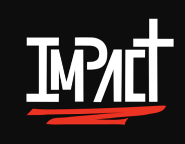
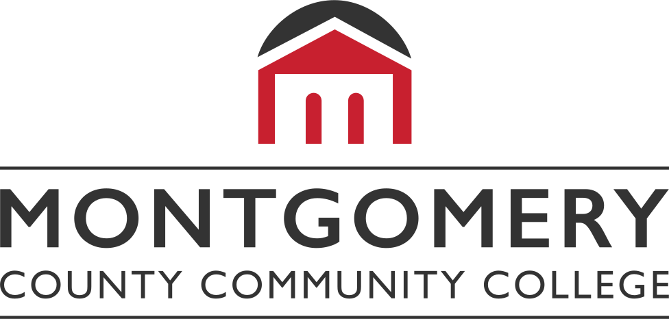
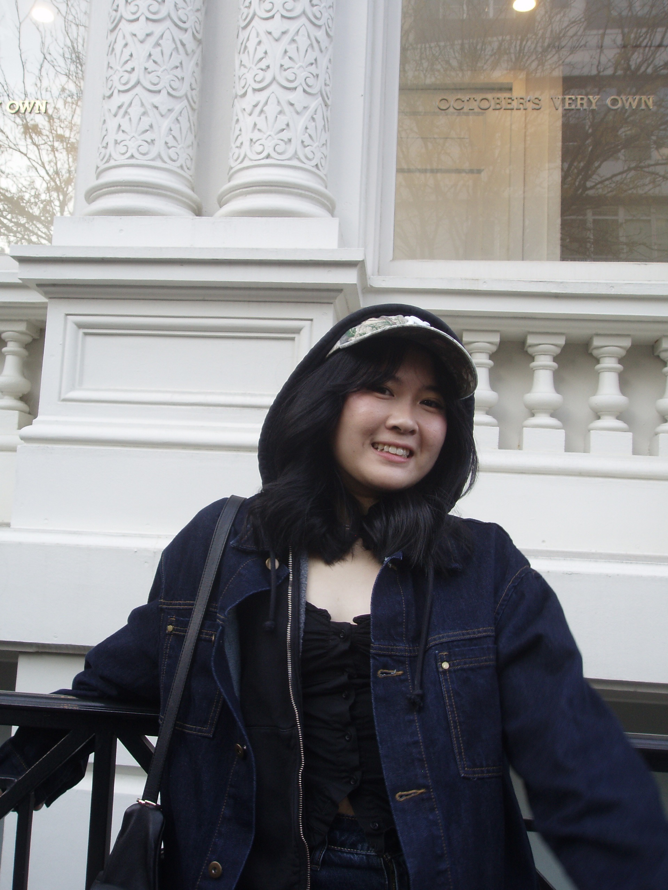

Welcome to my playground of creative things.
currently
Learning more @ Drexel University
Freedom Fight pairs educational courses with community and accountability tools. Working from research, I took a holistic view of how the program's features connect, then translated its mobile designs into a desktop experience — bringing check-ins, messages, and progress into one branded dashboard.

Impact Video Ministries publishes to over a million subscribers, so thumbnails needed to be fast to produce and instantly recognizable. I designed a reusable layout — headline, eyebrow, ribbon tag, and character illustration — that drops into a new color palette for every video without losing consistency.

The course dashboard's quick-links leaned on dull, dark colors with little visual hierarchy. I rebuilt them using MC3's own brand palette and icons relevant to each destination, so students can recognize a link at a glance.
Resume
Drexel University
B.S. in User Experience and Interaction Design
Expected June 2028
Montgomery County Community College
A.A.S. in Web Development and Design
2023
Tools
Figma
Framer
Illustrator
Photoshop
InDesign
HTML5 / CSS3
JavaScript
Java
React
Skills
Ideation
UX Strategy
User Research
Visual Design
Design Systems
Web Development
Wireframing
Prototyping
Languages
English
Tagalog (Filipino)
Interests
Community Volunteering
Travel
Badminton
Cooking

Based in
Philadelphia, PA
About
I'm Hannah — a UI/UX designer currently studying User Experience & Interaction Design at Drexel University. What pulls me into a project isn't the interface itself, it's the person using it — I like figuring out why someone thinks or hesitates the way they do, and using that to make them feel more comfortable and confident the moment they open something I've designed.
My process moves between research, wireframes, and high-fidelity prototypes — always circling back to "how does this person feel using it?" I've designed for wellness apps, campus tools, and retail, and I like carrying a project from that first conversation through to a built, working interface.
Skills
Ideation · UX Strategy · User Research · Visual Design · Design Systems · Web Development · Wireframing · Prototyping
Tools
Figma · Framer · Illustrator · Photoshop · InDesign · HTML5 / CSS3 · JavaScript · Java · React
Contact
Have a project in mind, or just want to say hi? My inbox is open.
hannahxpelingon@gmail.com© Hannah Pelingon
{kind=link}
{kind=link}
{kind=link}
{kind=link}
{kind=link}
{kind=link}
{kind=link}
{kind=link}
{kind=link}
{kind=link}
{kind=link}
{kind=link}
{kind=link}
{kind=link}
{kind=link}